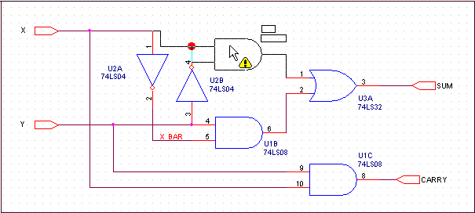
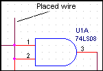
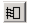

Connectivity and orthogonal drag
Connectivity, of course, is of vital importance to an
electronic design. Therefore, it is important to understand
how connectivity is maintained when you move objects on a
schematic page.
Capture draws wires that maintain connectivity with a
moved object in a stair step (orthogonal) fashion. When you
reposition an object, connectivity may be affected.
Capture warns you of connectivity changes as you drag the
object by placing markers at the connectivity change points
visible on the page. At the same time, the cursor changes
to an exclamation point as shown in the following
schematic, and the status line warns of net connectivity
changes.

Because some connectivity changes may not be visible on
screen, most connectivity changes for which you see an
alert are documented in the session log.
Capture automatically places junctions to create
electrical connections at "T" intersections where
wires abut and do not cross. Also, Capture places a
junction for you where a wire crosses a pin.
Note: Before you edit a design created in an earlier version of Capture in Capture Release 9.1, you should run a Design Rules Check to show where Capture will place junctions in your design. If you do not want electrical connections at "T" intersections and on pins where wires cross, you can adjust the design as necessary by using an earlier version of Capture before you edit in Capture Release 9.1.
In Capture Release 9 and earlier, you could place wires as
shown in the figure below and Capture would not
automatically place junctions for you at "T"
intersections or pins.

If you complete the operation, connectivity change warnings will appear in the session log as shown below.
------------------------------------------------------ The following 2 points have been identified as net connectivity change points from the last operation ------------------------------------------------------ (2.60, 1.80) (2.60, 2.00)
The orthogonal drag feature eliminates most unintentional
disconnects. As such, Capture will no longer warn you of
some connectivity changes caused by dragging objects. If
you drag the end of a wire or wire segments that are
connected to pins or net symbols, they will disconnect. If
you drag wire-to-pin or wire-to-net symbol disconnects back
into place, you will see connectivity change indicators.
Wire-to-wire connections stretch to maintain connectivity,
and junctions maintain connections when you drag wire
segments, objects, or entire nets.
The following table shows when Capture provides a
connectivity change alert:
|
Object Type |
Drag |
Place |
Pasting |
Resizing |
|
Part |
Yes |
Yes |
Yes |
N/A |
|
Hierarchical Block |
Yes |
No |
Yes |
N/A |
|
Wire |
Yes |
Yes |
Yes |
Yes |
|
Bus |
Yes |
Yes |
Yes |
Yes |
|
Net Symbol |
Yes |
Yes |
Yes |
N/A |
|
Bus Entry |
Yes |
No |
Yes |
N/A |
To drag a segment orthogonally
- Select the segment and drag it to the new location. The wire or bus stretches orthogonally to maintain connectivity.
To drag a segment non-orthogonally
- Hold the Shift key while you select the end point and drag the wire. The selected end of the wire moves in any direction while the opposite end remains in place.
When you click on a wire segment, only that segment and its two handles are selected.
When you drag a part or wire to another location and that
change affects connectivity, Capture flags a warning with a
changed cursor ( ) and
temporary markers (
) on
your schematic. Visible and off-screen connectivity changes
are saved in the session log, if you complete the
operation.
Capture now provides you the following UI options to control the drag operation:
- A check box named Allow component move with connectivity changes in the Miscellaneous tab of the Preferences dialog box.
-
A toolbar button with the following toggle states:
- If the check box is selected or the toolbar button is in thestate, then Capture will allow you to drag and place the selected part or wire on the schematic, even if it results in connectivity changes. Also, Capture will flag a warning with a changed cursor and will show the temporary markers.
- However, if the check box is not selected or the toolbar button is in thestate, then the selected part or wire attaches to the cursor and does not get placed on the schematic, if it results in connectivity changes. Also, Capture flags only a warning with a changed cursor and does not show the temporary markers.
To move a wire or bus
- Select the wire or bus.
- Hold the Alt key while you move the wire or bus. The wire or bus segment breaks connectivity with the rest of the net.
|
|
Moving pins connected to wires may cause wires to drag, but moving a wire always causes disconnection from pins, ports, and other objects. |
To copy a wire
- Hold the Ctrl key while you drag the wire.
To move a vertex
- Select a wire segment next to the vertex.
-
Drag the vertex to the new location.
One segment of the wire or bus stretches to the new location.
The other segment breaks connectivity.